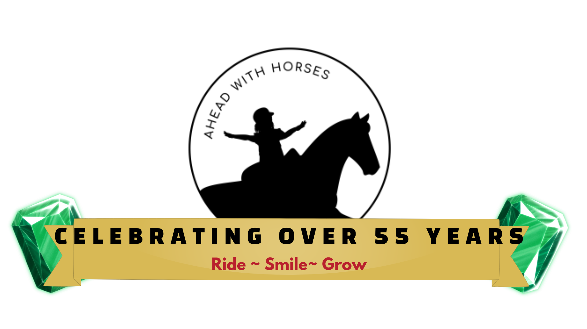

With your donation, students at AHEAD With Horses can experience the life-changing benefits of therapeutic riding. Children come to our program with a wide range of challenges, including autism, Down syndrome, cerebral palsy, developmental delays, and mobility limitations.
Through their connection with our horses, these students gain confidence, improve physical strength and balance, and develop emotional trust and independence.
Therapeutic riding is more than simply sitting on a horse. Each ride activates muscles used for posture, coordination, and balance, while the steady rhythm of the horse's movement helps regulate the nervous system and improve focus.
Your generosity helps make this possible — supporting the care of our horses, the training of volunteers, and the individualized attention each student receives.
Because of you, these students Ride. Smile. Grow.
Mark
Mark has been part of the program longer than many of our students have been alive. Mark is 28 years old now, and he first started riding with us when he was just 12.
Mark has limited verbal communication, but when he's around the horses, something special happens. His excitement is unmistakable. One of the few phrases he consistently uses is "Walk please," which he proudly says to encourage his horse forward. The horses understand him, and he understands them.
The routine of coming to the barn, seeing the horses, and riding is the highlight of Mark's week. It brings him joy, comfort, and a sense of stability that is hard to find elsewhere.
Even though his account is now behind, we simply cannot tell him he can't come. This program is one of the most meaningful parts of his life. Especially after the loss of his brother, the barn has remained one of the few places where Mark still feels grounded and safe.
Mark's Video
Emilia
Emilia lives with multiple disabilities, including a chromosomal deletion and autism spectrum disorder. She also has hypotonia, which causes low muscle tone and what doctors sometimes describe as "floppy" muscles.
When Emilia first joined the program, she didn't want to touch the horses at all. They were unfamiliar and overwhelming.
Today, that same little girl confidently approaches them with hugs and affection. She loves to show off for the staff, blowing kisses and proudly interacting with the horses.
Emilia has blossomed into a joyful, confident presence at the barn. She runs with confidence, hands swinging freely at her sides, full of personality and pride.
Emilia's Video
Danielle
Danielle lives with a rare and severe seizure disorder called Dravet syndrome.
Because of her medical condition, she often has to miss lessons. At many therapeutic riding programs, a student who misses this many sessions would be removed from the program.
But we would never do that to Danielle.
When she is able to come to the barn, she loves it deeply. And each time she rides, we see her strength continue to grow.
Right now, however, getting Danielle onto the horse is incredibly difficult. Without a proper mounting ramp, it currently takes four people working together just to safely lift her onto the horse and help her sit upright. A mounting platform would make this process safer, more dignified, and far easier for both Danielle and the volunteers helping her.


Connor
Connor loves the horses with his whole heart.
Over time, he has grown tremendously in confidence. Today, he proudly leads his own horse from the barn to the riding ring before each lesson — a responsibility that once would have seemed impossible.
He has also become a favorite among the volunteers, who admire his determination and the way he connects with the animals.
Recently, Connor has been facing serious health challenges and has spent time in and out of the hospital. Even so, whenever he is able, he returns to the barn.
The horses are still waiting for him, and this is where he belongs.
Connor's Video
Ivana
Ivana is a student who has Down Syndrome and who has been part of our program for an incredible 25 years.
She is also autistic and non-verbal. But the moment she arrives at the barn, her excitement says everything. Her mother often has to hold her back because she's so eager to get to the horses and start her ride.
Riding helps Ivana improve her fine motor skills and attention span, but the emotional impact is just as important. The barn is one of the places where she feels happiest and most engaged.
For Ivana, being around the horses isn't just therapy — it's pure joy.


Elliot
Elliot has mild cerebral palsy and is also on the autism spectrum. For him, riding provides both emotional and physical benefits that are difficult to replicate anywhere else.
Elliot is what therapists call a "sensory seeker." The rhythmic movement of the horse helps satisfy his need for sensory input in a way that is calming and regulating for his body.
At the same time, riding helps strengthen the physical challenges associated with cerebral palsy. Working with the horse improves Elliot's balance, muscle coordination, and posture. What looks like a joyful ride to an outsider is powerful therapy happening in motion.
Elliot's Video
Our Vision for the Future
Because of people like you, the barn remains a place of hope, strength, and breakthroughs.
As we look toward the future of AHEAD With Horses, we are constantly seeking ways to enhance the safety and dignity of our riders.
Upcoming Program Goals
Safety & Infrastructure: Annual Liability Insurance ($18,000)
The foundational support that allows us to keep our gates open and our students protected every single day.
Accessibility: Mounting Ramp ($3,000)
A vital tool to help students like Danielle transition from the ground to the saddle with ease and dignity.
The Riding Environment: Ring Repair ($5,000)
Maintaining the specialized footing in our arena to ensure a stable and safe surface for horses and students.
Equipment ($3,000)
Investing in two new therapeutic surcingles (the vaulting saddles we use). This will give the opportunity to use more horses on lesson days.
Meet Ginger
Ginger is as sweet as they come.
She is calm, patient, and steady — a perfect partner for riders of all abilities.
- Any volunteer can groom or lead her
- Any student can ride her
- She rarely spooks and remains steady for even the most nervous riders
For many children, Ginger becomes their first trusted connection with a horse.
That moment — when a child who may struggle with communication, balance, or confidence reaches out and touches a horse for the first time — is often the beginning of something extraordinary.
Our horses make all of this possible. Without them, the program simply would not exist.
Each horse in the program costs approximately $10,000 per year to care for.
This covers feed, farrier care, veterinary care, bedding, and the supplies needed to keep them healthy, comfortable, and ready to work with our students.
Because of these remarkable horses, children who face daily physical and developmental challenges are able to experience strength, independence, and joy in ways that traditional therapy often cannot provide.
And for many of them, it all begins with a horse like Ginger.


Continuing the Work
Donations from people like you ensure that students will experience the life-changing benefits of therapeutic riding.
Children who once struggled with balance, communication, confidence, or independence are able to grow stronger through their connection with our horses.
Every week at the barn we see moments that remind us why this program matters so much — a rider sitting taller on the horse, a child speaking a new word, a student who once felt uncertain now proudly leading their horse into the ring.
These moments happen because people like you believe in this work.
As we continue serving these students, there are a few practical needs that help keep the program strong and ensure these experiences remain available to the children who depend on them.
Thank you for believing in these children, in our volunteers, and in the extraordinary horses that help make this work possible.
Because of you, these students Ride. Smile. Grow.